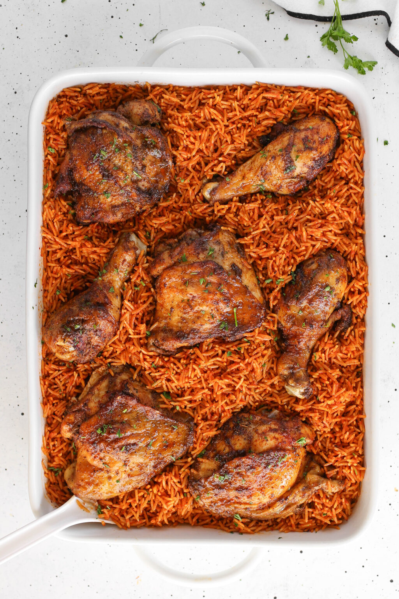

Home
Jollof rice

Description
Jollof rice is a flavorful one-pot rice dish and popular across West Africa, especially Ghana, featuring rice cooked in a seasoned tomato and pepper-based stew with onions and spices.
Ingredients
- Rice
- Chicken
- Spices (Thyme, Rosemary, White Pepper, Black Pepper, Garlic, Ginger)
- Chicken Stock
- Tomato Sauce
- Vegetables (Carrots, Peas, Green Beans, etc)
- Plantain (Optional)
Steps
- Rinse the rice by covering it with water in a large bowl. Swish the grains with your hands, and then drain the water. Repeat until the water runs clear, drain, and set aside.
- Wash the chicken, then dry them with a paper towel.
- Combine spices and mix well. Sprinkle both sides of the thighs with a generous amount of the spice blend.
- Heat about 2 tablespoons of oil in a skillet, Dutch oven, or oven-safe pan. Brown chicken for about 3 minutes on each side. Remove from the pan and set aside.
- Remove excess oil from the pan, leaving 2-3 tablespoons of oil. Add the onions, thyme, garlic, and sauté until soft but not golden, 2-3 minutes. Then add the rice and stir for another 2 minutes.
- Gently pour in the tomato sauce, chicken stock, salt, paprika, white pepper, curry powder, and chicken bouillon. Stir, add the chicken back, and bring to a boil.
- Cook over low heat for about 20 minutes. Then, add the vegetables and cook for an additional 10-15 minutes.
- Ready to serve with salad, coles law or fried plantain